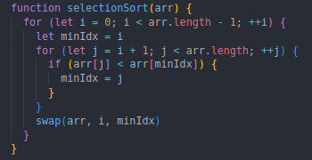
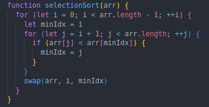
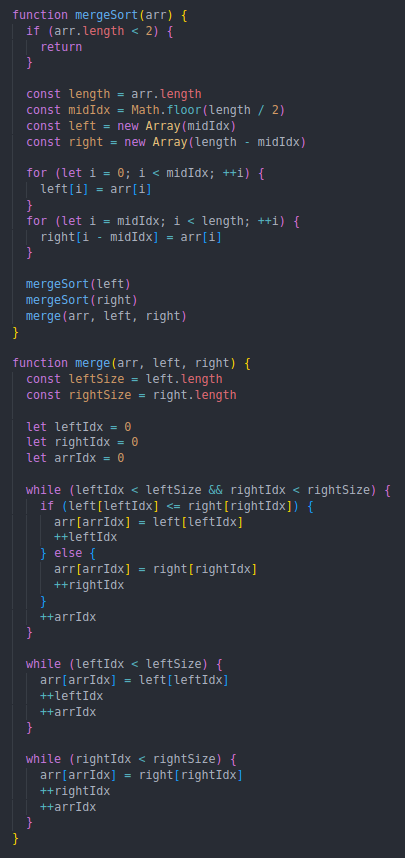
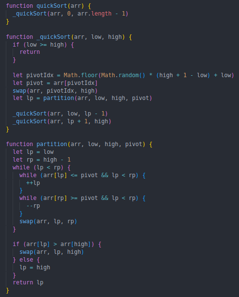
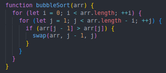

Selection Sort, O(n2)
The selection sort algorithm works by repeatedly searching for the smallest element in the array and putting it at the beginning (then moving on to the next subarray). Code:
The selection sort algorithm works by repeatedly searching for the smallest element in the array and putting it at the beginning (then moving on to the next subarray). Code:
The merge sort algorithm takes an array and recursively divides it into havles until the halves cannot be broken down any further. Then, the created halves get merged together in a sorted manner and you eventually end up with the original array being sorted. (note: this algorithm uses O(n) space)
Quick sort takes in an array and chooses a pivot element (in this example, the pivot is chosen using a random index in the array range). Then, all of the elements less than the pivot get placed on the left side and the rest on the right side of the pivot. Then, quick sort is recursively called on the two sides until they cannot be divided any further.
Bogo sort is probably the only algorithm that is more naive than this one. Bubble sort works by repeatedly traversing the array and swapping predecessor elements with their successor if the predecessor is larger until the array is sorted. So, the larger elements 'bubble' up.
